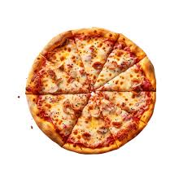

Odin Recipes - Pizza

Description
This simple recipe has received 50 michellin stars and is made exclusively for celebrities.
Ingredients
Warm Water
Yeast
Cold Water
Salt
Flour
Olive Oil
Mozzarella Cheese
Oregano
Black Pepper
Crushed Tomatoes
Basil
Steps
Make the dough
Knead dough on a floured surface until smooth
Divide in half and form into two tight dough balls
Make the pizzas
Preheat the oven
Prepare the first pizza
Put on the Toppings
Bake in the preheated oven
Remove from the oven
Enjoy!
Homepage